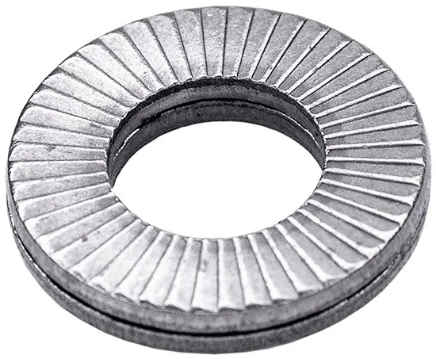
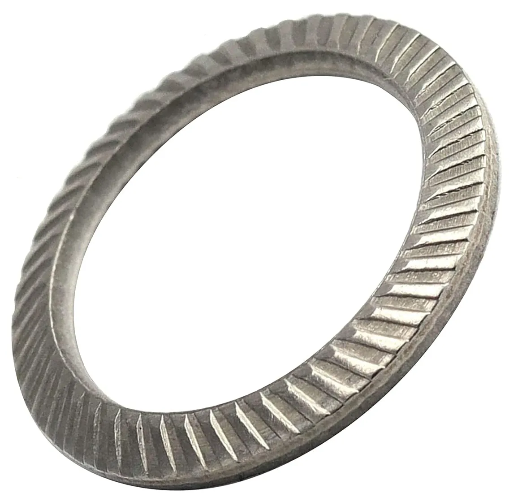
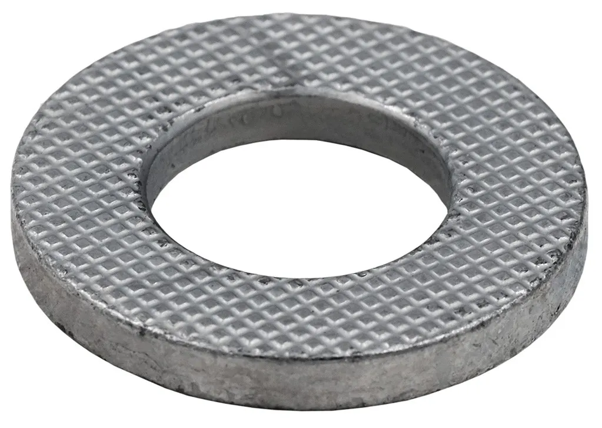

Стопорные шайбы - размеры и не только
Выберите тип шайбы
Nord-Lock

Преимущества шайбы Nord-Lock
- Простота и оперативность монтажа и демонтажа с помощью ручных инструментов.
- Функция блокировки не зависит от смазки
- Высокая устойчивость к коррозии
- Надежная блокировка, даже для соединений с малой длиной захвата.
- Возможность повторного использования без потери характеристик.
Размеры шайб Nord-Lock
| Типоразмер | Внутренний Ø | Наружный Ø | Толщина | Внутр. Ø (дюйм) | Наружн. Ø (дюйм) | Толщина (дюйм) | Размер болтов | Размер болтов, UNC | Вес, кг/100 шт |
|---|---|---|---|---|---|---|---|---|---|
| NL3 | 3,4 | 7,0 | 1,8 | 0,13″ | 0,28″ | 0,07″ | М3 | #5 | 0,03 |
| NL3,5 | 3,9 | 7,6 | 1,8 | 0,15″ | 3/10″ | 0,07″ | М3,5 | #6 | 0,04 |
| NL4 | 4,4 | 7,6 | 1,8 | 0,17″ | 3/10″ | 0,07″ | М4 | #8 | 0,04 |
| NL5 | 5,4 | 9,0 | 1,8 | 0,21″ | 0,35″ | 0,07″ | М5 | #10 | 0,05 |
| NL6 | 6,5 | 10,8 | 1,8 | 0,26″ | 0,43″ | 0,07″ | М6 | 0,07 | |
| NL8 | 8,7 | 13,5 | 2,5 | 0,34″ | 0,53″ | 1/10″ | М8 | 5/16″ | 0,15 |
| NL10 | 10,7 | 16,6 | 2,5 | 0,42″ | 0,65″ | 1/10″ | М10 | 0,23 | |
| NL11 | 11,4 | 18,5 | 2,5 | 0,45″ | 0,73″ | 1/10″ | М11 | 7/16″ | 0,29 |
| NL12 | 13,0 | 19,5 | 2,5 | 0,51″ | 0,77″ | 1/10″ | М12 | 0,29 | |
| NL14 | 15,2 | 23,0 | 3,4 | 3/5″ | 0,91″ | 0,13″ | М14 | 9/16″ | 0,63 |
| NL16 | 17,0 | 25,4 | 3,4 | 0,67″ | 1″ | 0,13″ | М16 | 5/8″ | 0,69 |
| NL18 | 19,5 | 29,0 | 3,4 | 0,77″ | 1,14″ | 0,13″ | М18 | 0,89 | |
| NL20 | 21,4 | 30,7 | 3,4 | 0,84″ | 1,21″ | 0,13″ | М20 | 0,95 | |
| NL22 | 23,4 | 34,5 | 3,4 | 0,92″ | 1,36″ | 0,13″ | М22 | 7/8″ | 1,25 |
| NL24 | 25,3 | 39,0 | 3,4 | 1″ | 1,54″ | 0,13″ | М24 | 1,74 | |
| NL27 | 28,4 | 42,0 | 5,8 | 1/12″ | 1,65″ | 0,23″ | М27 | 3,14 | |
| NL30 | 31,4 | 47,0 | 5,8 | 1,24″ | 1,85″ | 0,23″ | М30 | 1 1/8″ | 4,10 |
| NL33 | 34,4 | 48,5 | 5,8 | 1,35″ | 1,91″ | 0,23″ | М33 | 1 1/4″ | 3,89 |
| NL36 | 37,4 | 55,0 | 5,8 | 1,47″ | 2,17″ | 0,23″ | М36 | 1 3/8″ | 5,49 |
| NL39 | 40,4 | 58,5 | 5,8 | 1,59″ | 2 3/10″ | 0,23″ | М39 | 1 1/2″ | 5,89 |
| NL42 | 43,2 | 63,0 | 5,8 | 1 7/10″ | 2,48″ | 0,23″ | М42 | 7,97 | |
| NL45 | 46,2 | 70,0 | 7,0 | 1,82″ | 2,76″ | 0,28″ | М45 | 1 3/4″ | 10,2 |
| NL48 | 49,6 | 75,0 | 7,0 | 1,95″ | 2,95″ | 0,28″ | М48 | 12,0 | |
| NL52 | 53,6 | 80,0 | 7,0 | 2,11″ | 3,15″ | 0,28″ | М52 | 2″ | 13,5 |
| NL56 | 59,1 | 85,0 | 7,0 | 2,33″ | 3,35″ | 0,28″ | М56 | 2 1/4″ | 13,5 |
| NL60 | 63,4 | 89,0 | 7,0 | 2,48″ | 3,54″ | 0,28″ | М60 | 15,2 | |
| NL64 | 67,1 | 95,0 | 7,0 | 2,64″ | 3,74″ | 0,28″ | М64 | 2 1/2″ | 16,7 |
| NL68 | 71,1 | 100,0 | 9,5 | 2 4/5″ | 3,94″ | 0,37″ | М68 | 28,2 | |
| NL72 | 75,1 | 105,0 | 9,5 | 2,96″ | 4,13″ | 0,37″ | М72 | 30,7 | |
| NL76 | 79,1 | 110,0 | 9,5 | 3,11″ | 4,33″ | 0,37″ | М76 | 3″ | 33,3 |
| NL80 | 83,1 | 115,0 | 9,5 | 3,27″ | 4,53″ | 0,37″ | М80 | 36,0 | |
| NL85 | 88,1 | 120,0 | 9,5 | 3,47″ | 4,72″ | 0,37″ | М85 | 37,8 | |
| NL90 | 92,4 | 130,0 | 9,5 | 3,64″ | 5,12″ | 0,37″ | М90 | 47,4 | |
| NL95 | 97,4 | 135,0 | 9,5 | 3,83″ | 5,31″ | 0,37″ | М95 | 49,8 | |
| NL100 | 103,4 | 145,0 | 9,5 | 4,07″ | 5,71″ | 0,37″ | М100 | 58,9 | |
| NL105 | 108,4 | 150,0 | 9,5 | 4,27″ | 5,91″ | 0,37″ | М105 | 61,3 | |
| NL110 | 113,4 | 155,0 | 9,5 | 4,46″ | 6 1/10″ | 0,37″ | М110 | 63,5 | |
| NL115 | 118,4 | 165,0 | 9,5 | 4,66″ | 6 1/2″ | 0,37″ | М115 | 75,3 | |
| NL120 | 123,4 | 170,0 | 9,5 | 4,86″ | 6,69″ | 0,37″ | М120 | 77,9 | |
| NL125 | 128,4 | 173,0 | 9,5 | 5,06″ | 6,81″ | 0,37″ | М125 | 76,6 | |
| NL130 | 133,4 | 178,0 | 9,5 | 5 1/4″ | 7,01″ | 0,37″ | М130 | 79,2 |
Schnorr

Преимущества шайбы Schnorr
- Высокая устойчивость к вибрации благодаря конической форме и зубчатой поверхности.
- Равномерное распределение нагрузки по кольцу исключает изгибающие моменты и деформацию стержня болта.
- Чрезвычайно высокая защита от потери усилия предварителного натяжения.
- Более толстое поперечное сечение обеспечивает более высокие моменты затяжки в сравнении с типом S.
- Скользящие поверхности зубьев предотвращают повреждение элементов.
Особенности применения шайбы Schnorr
Устанавливается ТОЛЬКО выпуклой стороной к гловке болта или к гайке.
Размеры шайб Schnorr
| Под резьбу | Внутренний Ø | Наружный Ø | Толщина после установки | Полная толщина (max) | |
|---|---|---|---|---|---|
| метрическую | дюймовую | ||||
| М5 | 3/16 | 5,3 | 9 | 0,9 | 1,3 |
| М6 | - | 6,4 | 10 | 0,9 | 1,4 |
| М8 | 5/16 | 8,4 | 13 | 1,1 | 1,7 |
| М10 | 3/8 | 10,5 | 16 | 1,4 | 2,0 |
| М12 | - | 13 | 18 | 1,4 | 2,1 |
| М14 | 9/16 | 15 | 22 | 1,4 | 2,2 |
| М16 | 5/8 | 17 | 24 | 1,9 | 2,6 |
| М18 | - | 19 | 27 | 1,9 | 2,7 |
| М20 | - | 21 | 30 | 1,9 | 2,8 |
| М22 | 7/8 | 23 | 33 | 1,9 | 3,0 |
| М24 | - | 25,6 | 36 | 2,4 | 3,4 |
| М27 | - | 28,6 | 39 | 2,4 | 3,5 |
| М30 | 1 1/8 | 31,6 | 45 | 2,4 | 3,8 |
| М36 | 1 3/8 | 38 | 54 | 3,0 | 4,5 |
LOCKTIX

Преимущества шайбы LOCKTIX
- Заменяет и плоскую и пружинную шайбу.
- Стопорение винтовых соединений классом прочности 8.8, 10.9, 12.9.
- Многоразовое использование без потери характеристик.
- Устойчивость к коррозии.
- Хорошо выполняет свои функции на окращенных, анодированных и оцинкованных поверхностях, не боится загрязнений и попадания жира.
Размеры шайб LOCKTIX
| Под резьбу | Внутренний Ø | Наружный Ø | Толщина | Вес (гр) |
|---|---|---|---|---|
| М8 | 8,4 | 16 | 2,5 | 2,57 |
| М10 | 10,5 | 20 | 2,5 | 4,05 |
| М12 | 13 | 24 | 3,0 | 6,93 |
| М14 | 15 | 28 | 3,0 | 9,59 |
| М16 | 16,5 | 30 | 4,0 | 14,1 |
| М18 | 19 | 34 | 4,0 | 18,28 |
| М20 | 21 | 37 | 4,0 | 21,4 |